HealthMitra is a full-stack health companion application for elderly patients managing daily medication and the family caregivers who support them remotely. It is built with React + Vite on the client and Express + node-cron on the server, backed by a PostgreSQL-ready data layer. The prototype runs on seeded in-memory data with zero infrastructure, while the architecture provides clean seams for production deployment.
The primary user experience loop is: schedule a reminder → record a tap or voice confirmation → flag a missed dose after a configurable window → alert linked caregivers. A prominent SOS path adds a fast way to request help. The interface is bilingual (English / Hindi) with large, accessible controls designed for elderly use.
This document describes the software design principles, architecture, user interface, key design decisions, and maintainability strategy applied in Digital Assignment 2.
Each layer exposes a clear interface that hides implementation details:
data/repository.js exposes async methods (findById,
insert, where, etc.). The in-memory store is a private implementation detail;
a PostgreSQL version with identical method names replaces it without touching services or routes.notifications/channels.js defines a
{ name, deliver() } interface. Adding FCM or SMS means adding a channel object; no
service changes required.api/client.js wraps fetch and attaches the
session header in one place. Components call domain-specific functions like
medicationsApi.create(), never raw URLs.hooks/useSpeech.js wraps the Web Speech API; feature
components only see text transcripts.// server/src/data/repository.js – every method is async
const byId = (table) => (id) =>
Promise.resolve(tables[table].find(item => item.id === id) || null);
export const repository = {
users: { findById: byId('users'), findByEmail: ..., insert: ... },
medications: { forPatient: ..., findById: ..., insert: ..., update: ..., remove: ... },
// ...same contract for links, doseLogs, alerts, notifications, sosEvents, contacts
};// server/src/notifications/channels.js – pluggable delivery
export const consoleChannel = {
name: 'in-app (push adapter placeholder)',
deliver(notification, recipient) {
console.log(`[notification:${notification.type}] ${recipient?.name}: ${notification.title}`);
}
};
export const channels = [consoleChannel];
// To add FCM: export const fcmChannel = { name: 'fcm', deliver(n, u) { ... } };
// then: export const channels = [consoleChannel, fcmChannel];The codebase is decomposed into small, independently understandable units:
routes/auth.js, routes/medications.js, …),
one service per domain concept (services/doseService.js, services/sosService.js, …),
and a single repository file for data access.features/today/, features/dashboard/, …),
with registries (workspace/screens.js, workspace/ModalHost.jsx) that mean adding a
new screen or dialog is one file + one line of registration.// client/src/workspace/screens.js – adding a screen = 1 import + 1 line
export const SCREENS = {
today: TodayPage,
dashboard: DashboardPage,
medications: MedicinesPage,
history: HistoryPage,
alerts: AlertsPage,
symptoms: SymptomsPage,
contacts: ContactsPage
};accessService.js is the single place for "who may see or edit a patient's data" –
owner/edit/view decided in one function.doseService.js owns the entire dose lifecycle: ensuring today's logs, listing, confirming.symptomService.js only knows the curated symptom lookup list and disclaimer.DoseCard.jsx is purely presentational – it receives props and renders; no API calls, no state management.// server/src/services/accessService.js – single source of truth
export async function accessFor(actor, patientId) {
if (actor.role === 'patient' && actor.id === patientId)
return { allowed: true, canEdit: true, permissionLevel: 'owner' };
const link = await repository.links.find(patientId, actor.id);
if (!link) return { allowed: false, canEdit: false, permissionLevel: null };
return { allowed: true, canEdit: link.permissionLevel === 'edit', permissionLevel: link.permissionLevel };
}
export async function assertCanView(actor, patientId, message) {
const access = await accessFor(actor, patientId);
if (!patientId || !access.allowed) throw forbidden(message);
return access;
}WorkspaceContext / useSession,
not on each other or on parent props. The Workspace shell never imports a feature directly (registries).HttpError; a single
errorHandler middleware maps to JSON. Routes have no try/catch.// server/src/middleware/errorHandler.js – routes never catch errors
export function errorHandler(error, _req, res, _next) {
if (error instanceof HttpError)
return res.status(error.status).json({ error: error.message });
console.error(error);
return res.status(500).json({ error: 'Something went wrong on the server.' });
}
export const asyncRoute = (handler) =>
(req, res, next) => Promise.resolve(handler(req, res, next)).catch(next);
Each module has a single responsibility:
config.js (environment variables),
lib/ (pure helpers – time, password, HTTP errors),
middleware/ (HTTP cross-cutting concerns),
services/ (business rules),
data/ (storage),
notifications/ (delivery),
scheduler/ (cron orchestration).
HealthMitra follows a layered client-server architecture. The React single-page application talks JSON to an Express REST API. The server is organised into four dependency layers: thin HTTP routers, cohesive domain services, a single async data repository, and cross-cutting infrastructure (middleware, scheduler, notification channels). Each layer only depends on the layer below it.
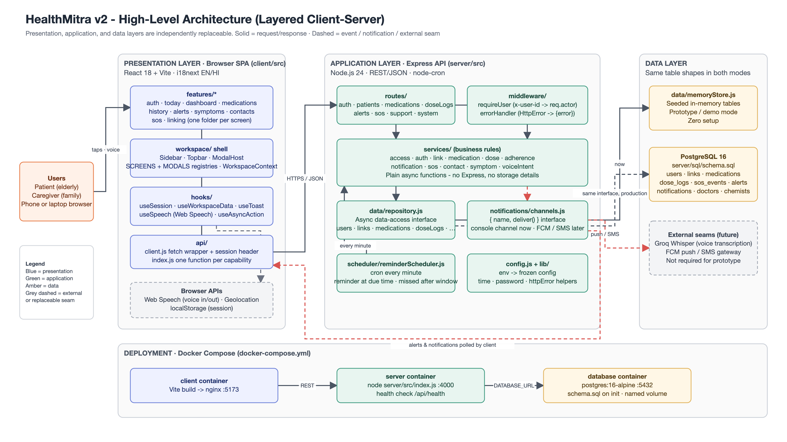
Why this architecture:
server/sql/schema.sql).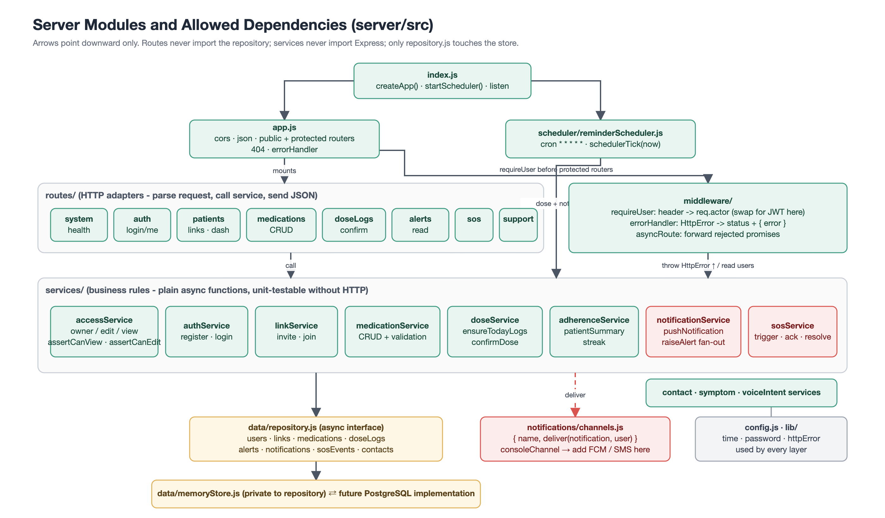
The client follows a feature-based folder structure with a central workspace shell.
The shell provides shared state through React Contexts (useWorkspace() for dashboard data,
alerts, and patient selection; useSession() for authentication state). Each screen is a
self-contained feature folder that registers itself via workspace/screens.js; modal
dialogs register via workspace/ModalHost.jsx.
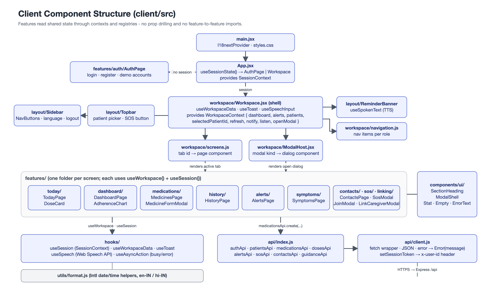
This structure eliminated 10-prop drilling from the original monolithic App.jsx (440 lines).
Each feature screen is independently understandable, and all CSS class names were preserved during the
refactor (verified by 16 Playwright end-to-end checks).
HealthMitra's interface is designed for elderly primary users and busy caregiver secondary users. The six screens below are captured from the running application and represent the v2 high-fidelity design.
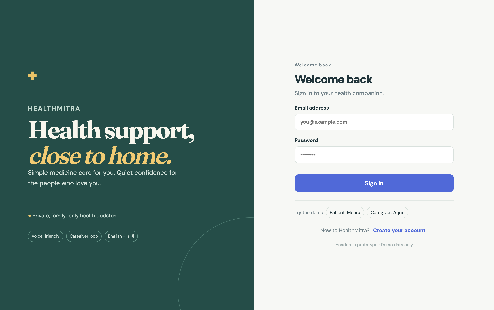
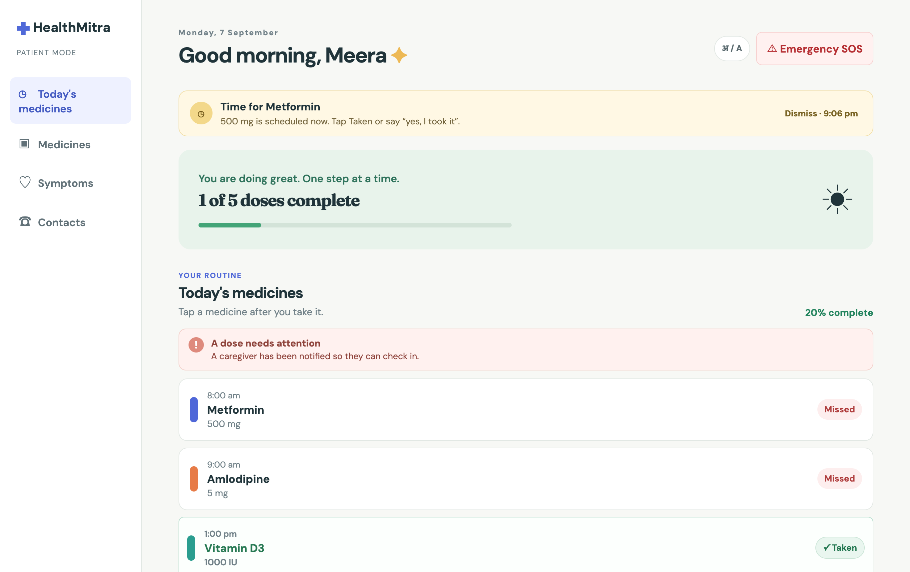
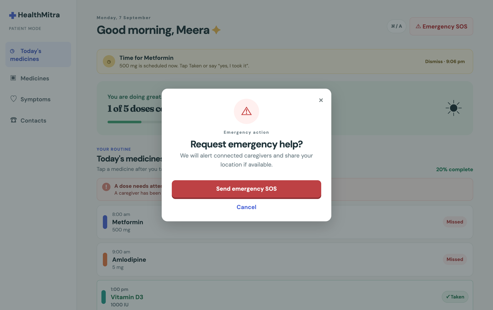
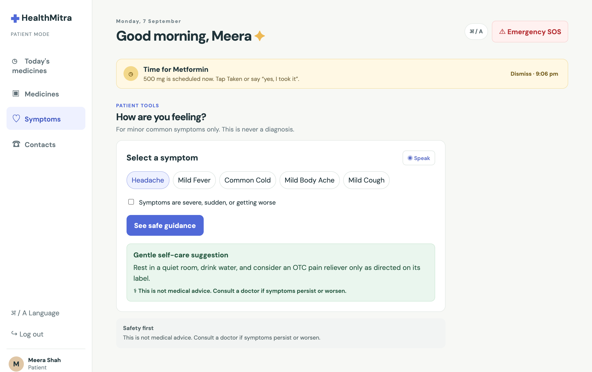
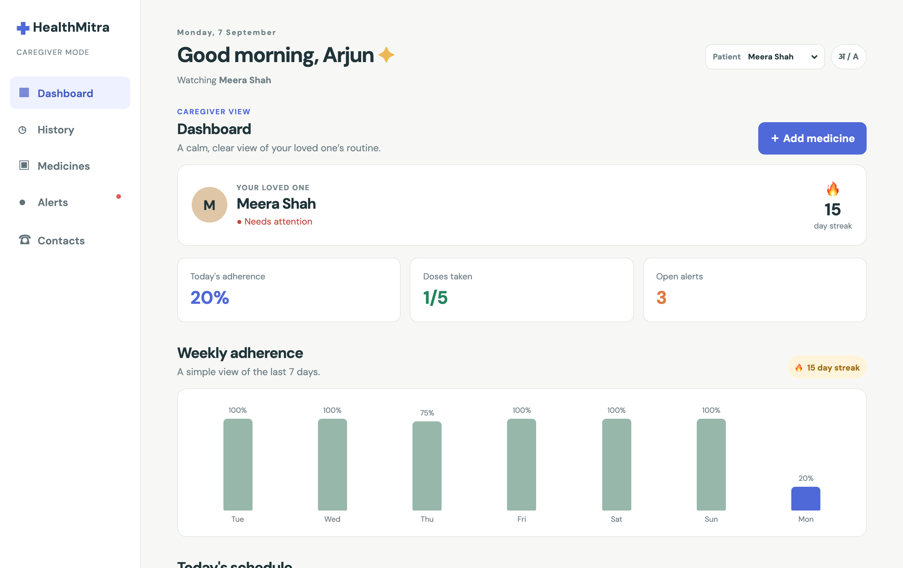
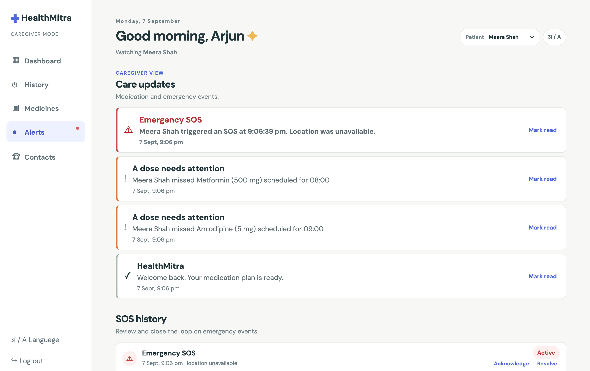
The interface applies the following design strategies for the elderly patient persona and the busy caregiver persona:
| Design Strategy | Implementation |
|---|---|
| Large tap targets | Dose confirmation buttons (Taken / Skipped / Undo) are full-width cards with generous padding, easy to tap on a phone. |
| Three-action dose model | Each dose has exactly three actions: Taken, Skipped, Undo. No ambiguity; the patient never needs to type or select from a menu. |
| Voice alternative | A microphone button lets the patient confirm a dose by saying "yes, I took it" or "haan, le liya" (Hindi). The Web Speech API is abstracted behind useSpeech.js. |
| Always-visible SOS | The red SOS button is persistent in the sidebar / mobile navigation. One tap opens the confirmation modal; a second tap sends the alert with optional browser geolocation. |
| English / Hindi toggle | A single tap in the top bar switches all copy and voice prompts between English and Hindi, powered by i18next. |
| Plain, reassuring copy | Status messages use calm, non-medical language: "All done for today!", "Your caregiver has been notified." |
| Colour + text status | Dose status uses both colour and a text label (e.g., green "Taken", amber "Pending", red "Missed"), never colour alone — important for users with reduced colour vision. |
| Read-only caregiver notice | View-only caregivers see a persistent badge and disabled edit buttons. The restriction is enforced server-side by assertCanEdit. |
| Persistent medical disclaimer | The symptom checker always displays: "This is not a diagnosis. Please consult your doctor." Severe or unlisted symptoms immediately escalate to "See a doctor". |
| Responsive mobile layout | Below 768px, the sidebar collapses to a bottom navigation bar. All touch targets remain large. |
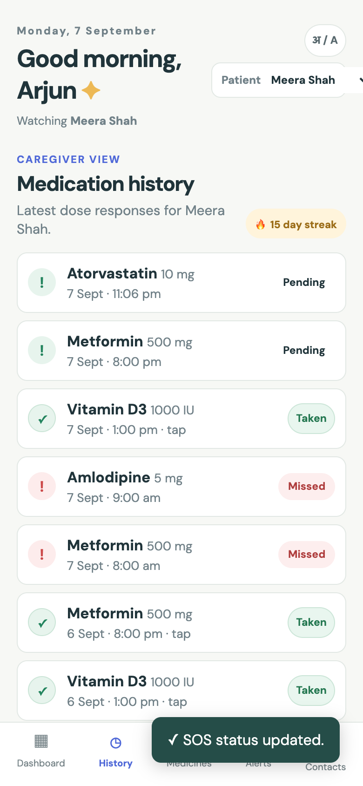
scheduler/reminderScheduler.js runs every minute on the server, iterates over all
patients, and delegates to doseService and notificationService.
Promise, even though the memory store is synchronous. The production
schema already exists at server/sql/schema.sql. No service changes are needed when
swapping the data layer.
{ name, deliver() } channels. FCM push or SMS can be added later without touching
business logic. Every caregiver linked to a patient receives each alert automatically.
accessService.accessFor()). Every protected
route calls assertCanView() or assertCanEdit(). This makes the permission
model auditable and ensures no route accidentally bypasses access checks.
App.jsx (440 lines, 10+ prop chains) was decomposed into
independent feature folders. Shared state flows through WorkspaceContext and
SessionContext. The screen and modal registries mean no feature imports another feature.
All CSS class names were preserved, so the visual risk was zero (verified by 16 automated browser checks).
// server/src/scheduler/reminderScheduler.js – pure orchestration
export async function schedulerTick(now = Date.now()) {
for (const patient of await repository.users.listPatients()) {
await ensureTodayLogs(patient.id);
const todayLogs = (await logsForPatient(patient.id))
.filter(log => log.scheduledTime.startsWith(today()));
for (const log of todayLogs) {
if (log.status !== 'pending') continue;
const scheduledAt = new Date(log.scheduledTime).getTime();
// Send reminder when time arrives
if (!log.reminderSentAt && now >= scheduledAt) { /* pushNotification(...) */ }
// Flag missed after configurable window
if (now - scheduledAt > config.reminderWindowMinutes * 60_000) { /* raiseAlert(...) */ }
}
}
}
The sequence diagram below shows the complete flow when a patient misses a scheduled dose.
The server-side scheduler detects the missed dose after the configurable window, marks the dose
log as "missed", raises an alert through notificationService, and fans out to every
linked caregiver.
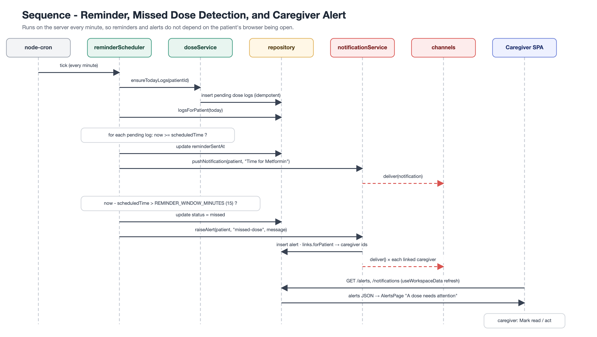
The entity-relationship diagram shows the PostgreSQL production schema. The same structure is mirrored in the in-memory store for the prototype. Key relationships: a user is either a patient or caregiver; patient_caregiver_links connect them with permission levels; medications belong to a patient and generate dose_logs daily; notifications target individual users with patient context.
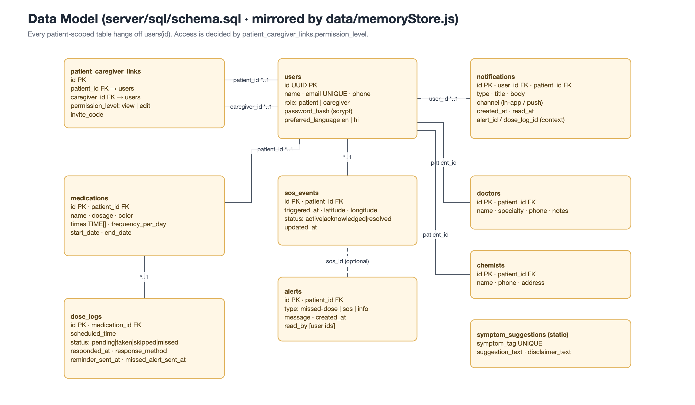
The layered, interface-driven architecture ensures that each anticipated change touches exactly one module:
| Change | What to modify | What stays unchanged |
|---|---|---|
| Switch to PostgreSQL | Implement data/repository.js methods using pg |
All services, routes, scheduler, client |
| Real authentication (JWT) | middleware/requireUser.js + api/client.js header |
All services, all feature screens |
| FCM push / SMS notifications | Add a channel object to notifications/channels.js |
All services, routes, scheduler |
| Groq Whisper transcription | Add transcription step before detectIntent in voiceIntentService.js |
Routes, client, other services |
| Add a new screen | features/<name>/Page.jsx + 1 line in workspace/screens.js + 1 line in navigation.js |
All existing features, workspace shell |
| Add a new modal dialog | Component file + 1 line in workspace/ModalHost.jsx |
Everything else |
| Unit testing | Services are plain async functions – testable without HTTP or DOM. End-to-end script already exists. | No production code changes needed |
client/src/
App.jsx # Session gate: AuthPage or Workspace
api/ # fetch wrapper + one function per backend capability
hooks/ # useSession, useWorkspaceData, useSpeech, useToast, useAsyncAction
components/ui|layout/ # SectionHeading, ModalShell, Sidebar, Topbar, ReminderBanner…
workspace/ # Shell, WorkspaceContext, screen + modal registries, navigation
features/<screen>/ # auth, today, dashboard, medications, history, alerts, symptoms,
# contacts, sos, linking
server/src/
index.js # Bootstrap: createApp + startScheduler + listen
app.js # Express assembly (public → requireUser → protected routers)
config.js # Environment → frozen config object
routes/ # Thin HTTP adapters per resource
middleware/ # requireUser, errorHandler/asyncRoute
services/ # Business rules (access, dose, medication, notification, sos…)
data/ # repository.js (async interface) + memoryStore.js (seeded prototype)
notifications/ # Delivery channels: { name, deliver() }
scheduler/ # node-cron reminder / missed-dose tick
lib/ # time, password, httpError helpersThe full source code is available at github.com/Nisarg10-leo/HealthMitra.